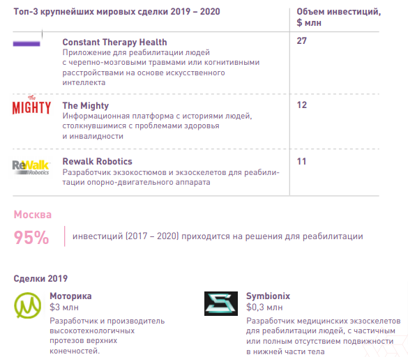

←На главную
Инновационные решения
Агентство инноваций Москвы подготовило обзор российских
Один из ключевых приоритетов Москвы – обеспечение равенства возможностей и равного доступа к инфраструктуре и сервисам для всех категорий граждан, в том числе уязвимых групп населения. Традиционные инструменты не всегда эффективны, поэтому Москва постоянно находится в поиске новых решений современных вызовов.
Анализ международного опыта показывает, что для решения данной проблемы мировые города выбирают комплексный подход с опорой на инновационные технологии, в котором выделяются четыре основные задачи:
Российские и международные решения сгруппированы по 5 направлениям поддержки
У вас есть инновационный продукт для социальной сферы?
Добавить решениеДля Москвы характерны те же вызовы и социальные изменения, что и для большинства остальных городов и стран мира.
Группы технологий, которые оказывают на социальную сферу наибольший эффект
Агентство инноваций Москвы подготовило обзор международного опыта и российской практики применения инноваций в социальной сфере. В данном исследовании проанализированы решения двух основных типов:
Ключевые выводы для технологических решений:
AssistiveTech – технологические решения, предназначенные для улучшения качества жизни и повышения независимости людей с ограниченными возможностями.
По прогнозам, объем рынка инновационных решений для людей с ограниченными возможностями (AssistiveTech) к 2024 году составит $30,8 млрд. Рынок молодой – об этом свидетельствует нестабильная динамика венчурных инвестиций и преобладание сделок небольшого объема. Многие AssistiveTech-проекты пока финансируются за счет грантов некоммерческих или госорганизаций.
В мире структура инвестиций в AssistiveTech дифференцирована. Инвесторам интересны разные направления, при этом лидируют решения для повышения мобильности, безопасности и независимости людей с ограниченными возможностями. В Москве 95% инвестиций приходится на решения для реабилитации.
AgeTech – технологические решения, предназначенные для улучшения качества жизни, безопасности и повышения самостоятельности людей старшего поколения.
Старение населения стало драйвером формирования новой технологической ниши – AgeTech, которая растет в среднем на более чем 20% в год (один из самых быстрорастущих рынков). Объем мировых венчурных инвестиций в AgeTech более чем в 3 раза выше, чем в AssistiveTech.
60% мировых венчурных инвестиций приходится на новые форматы заботы и ухода и решения, повышающие безопасность и самостоятельность людей старшего поколения (мониторинг показателей здоровья, финансовые и страховые сервисы и др.).